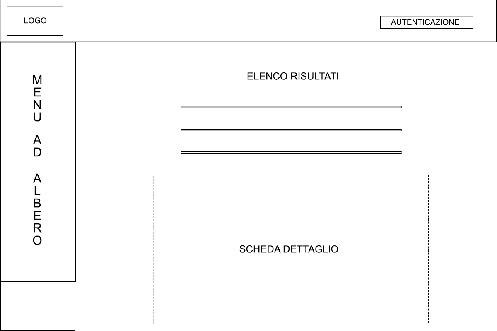
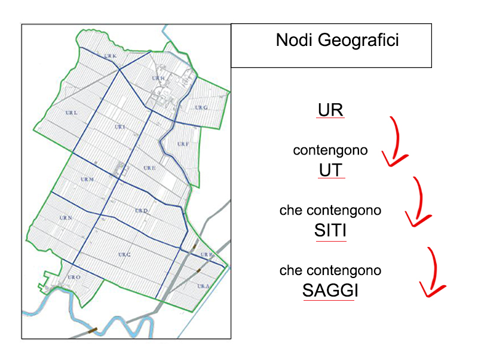

!Per poter fare ricerche all'interno del sito è necessario effettuare l'accesso autenticato!
Il sito web è visivamente suddiviso in due parti distinte: nella parte sinistra sono presenti i menù di navigazione mentre nella parte destra saranno visualizzati i form per le ricerche, i risultati e le schede di dettaglio.

Nello specifico sono presenti due menù: il primo, situato nella parte superiore, è un “menù ad albero” che si apre in modo dinamico e richiama la suddivisione e la gerarchia logica di scavo del Progetto Ca’Tron.
Il Progetto ha infatti previsto numerose campagne di ricognizione sul terreno e solo successivamente l’apertura di alcuni scavi archeologici.
Si possono dunque vedere in primis le 11 Unità di Ricognizione UR , una sorte di nodi radice da cui partono una serie di rami: quando presenti, le Unità Territoriali UT (che coincidono con la suddivisione agraria in campi) che sono risultate più “interessanti”, a seguire i Siti archeologici in esse contenuti, individuati prima e durante le ricognizioni di superficie, suddivisi a loro volta in Saggi di scavo.

Per ognuna di queste entità è presente una scheda descrittiva e i campi entro cui fare ricerca, visibili nella parte superiore.
L’elenco dei risultati successivi alla ricerca potrà essere visualizzato dopo la scheda descrittiva.
Il secondo menù, posto al di sotto di quello ad albero, è strutturato diversamente e consiste in una serie di nodi dati linkabili. Una volta selezionati si aprirà, nella parte di destra, un form con le voci entro cui si può fare ricerca.
I nodi dati sono suddivisi per Ca’Tron in Unità Stratigrafiche US , Reperti Archeologici RA e Documento .
Ogni scheda di dettaglio che verrà aperta potrà essere ulteriormente navigata attraverso i link in essa contenuti.
Buona navigazione!